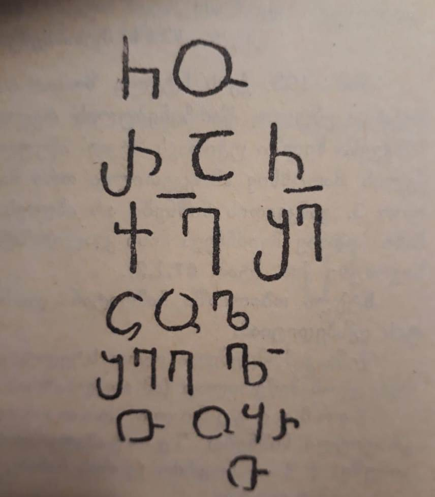

ბოლნისის სიონის მოსახსენებელი ჩორაჩისაBolnisi Sioni Cathedral memorial of Chorach
ბოლნისის სიონის მოსახსენებელი ჩორაჩისა
Bolnisi Sioni Cathedral memorial of Chorach
შინაარსი / Summary
მოსახსენებელი Memoral
ბიბლიოგრაფია Bibliography
კრიტიკული გამოცემა Interpretive Edition
ჩო -
რაჩ
ქ(რისტ)ე შ(ეიწყალ)ე
ცოლ -
5შვილი -
თურ -
თ
დიპლომატიური გამოცემა Diplomatic Edition
ႹႭ
ႰႠႹ
ႵႤ ႸႤ
ႺႭႪ
5ႸႥႨႪႨ
ႧႳႰ
Ⴇ

ბოლნისის სიონის მოსახსენებელი ჩორაჩისა
{'default': 'ნოდარ შოშიაშვილის ქართული წარწერების კორპუსის მიხედვით #47. ქარაგმის ნიშნად გამოყენებულია საშუალო ზომის განივი, სწორი ხაზი. განკეთილობის ნიშნები არ ახლავს.\n წარწერის დათარიღების პალეოგრაფიული ნიშნებია: კუთხოვანი Ⴇ გრაფემა, ძლიერ გახსნილი Ⴐ, Ⴄ და Ⴊ ოდნავ შესამჩნევი მარცხნივ გაზიდული ხაზებით,\n ზედა რკალშეკრული Ⴘ. According to the Corpus of Georgian Inscriptions by Nodar Shoshiashvili the inscription #47. Abbreviation mark: medium size horizontal straight line. The inscription does not contain any mark of separation. The inscription is dated according to the paleographic data: the angular shape of the grapheme Ⴇ, the graphemes Ⴐ, Ⴄ having widely open top lines and the grapheme Ⴊ with slightly inclined lines to the left, the grapheme Ⴘ also has the top arch engaged.'}
<div type="edition" xml:lang="ka" ana="mtavruli" xml:space="preserve">
<ab>
<lb n="1"/><w lemma="ქრისტე"><expan><abbr>ქ</abbr><ex>რისტ</ex><abbr>ე</abbr></expan></w>
<w lemma="განსუენება"><expan><abbr>გა</abbr><ex>ნ</ex><abbr>ო</abbr><ex>ჳ</ex><abbr>ს</abbr><ex>უ</ex><abbr>ენე</abbr></expan></w>
<w lemma="სულ">სოჳ<lb n="2" break="no"/>ლსა</w>
<name nymRef="ვაჩა">ვაჩაჲს<lb n="3" break="no"/>ასა</name>
<name nymRef="გურა"><expan><abbr>გო</abbr><ex>ჳ</ex><abbr>რაჲ<lb n="4" break="no"/>სასა</abbr></expan></name>
<name nymRef="მირა"><expan><abbr>მ</abbr><ex>ი</ex><abbr>რა</abbr><ex>ჲ</ex><abbr>ს</abbr><ex>ა</ex><abbr>ს</abbr><ex>ა</ex></expan></name>
</ab>
</div>